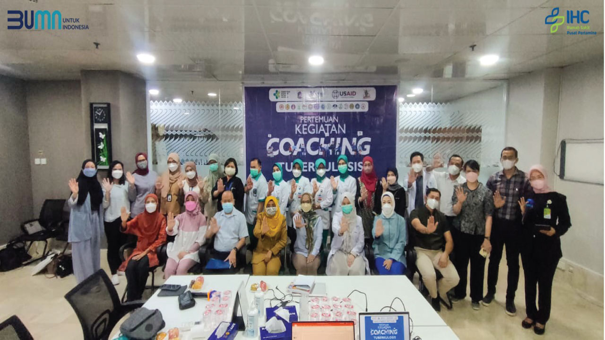

Pasien mendapat surat rujukan dari poliklinik atau dari Instalasi
Gawat Darurat
Ambil nomor antrian pada mesin antrian dan melakukan registrasi
di bagian pendaftaran
Pasien di antar ke kamar oleh Perawat jika telah selesai
registrasi dan dokumen lengkap
Perawat serta Dokter akan selalu memantau keadaan pasien untuk
memberikan pelayanan yang terbaik
Jika pasien telah pulang rawat, lakukan penyelesaian administrasi
dan pembayaran
Rawat Jalan
Rawat Inap
Kami berupaya memberikan yang terbaik dalam pengobatan dan
perawatan dengan suasana senyaman mungkin, didukung
tenaga-tenaga yang professional pada bidangnya. Prinsip kami
adalah memberikan pelayanan prima untuk semua pelanggan.
Kamar Standar
-
Kamar Superior
-
Rawat Inap Maternitas, Ibu & Anak
Kami berupaya memberikan yang terbaik dalam pengobatan dan
perawatan dengan suasana senyaman mungkin, didukung
tenaga-tenaga yang professional pada bidangnya. Prinsip kami
adalah memberikan pelayanan prima untuk semua pelanggan.
ICU / ICCU / PICU / NICU
Sebagai salah satu unit perawatan intensif dilengkapi
peralatan canggih dengan monitor central yang memungkinkan
pemanatauan ketat dan upaya penyelamatan intensif setiap saat
bagi pasien-pasien kritis dari segala usia.
Burn Unit
Unit luka bakar RSPP satu diantara yang terbaik di Indonesia
dilengkapi dengan fasilitas dan penanganan pasien terpadu
melibatkan bidang spesialistis khususnya bedah plastik
rehabilitasi medik dan konsulatasi bagi pemulihan trauma
kejiwaan.
Stroke Unit
Fasilitas rawat intensif kami lainnya, stroke unit memiliki
perawatan medis lengkap serta fisioteraphi ditempat. Anda akan
mendapatkan perawatan dari paramedis bersertifikasi dalam
usaha pemulihan yang optimal dengan resiko pasca stroke yang
minimal.
Ruang Isolasi / Ablasi
Merupakan ruangan yang didesain khusus untuk menangani pasien
infeksius dan terpisah dari pasien lain. Ruang isolasi yang
menggunakan tekanan udara negatif digunakan untuk pasien
infeksi yang penularannya bisa terjadi lewat udara. Ruangan
Ablasi di lengkapi dengan proteksi radiasi untuk menghindari
radiasi nuklir dari pasien.